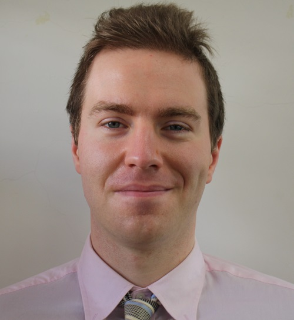

初めまして! 吉田ダンと申します。 アメリカのアラスカ州フェアバンクス市生まれ、現在宮崎県の日南市に暮らしてます。 人間の機能と幸福を中心して、健康、技術、とその二つの総合と進化を熱意で働いてます。
家族両方もお医者がいるので、幼い頃から気前の人格のお陰で育ててきました。その上に、大切な人が体の崩れと戦って、まだ健全な心が体の怠慢と持病で籠に捕まれる屈辱も詳しい。 多因性を意識しながら予防的な医療計画は生活の根から伸びる。患者個人の特徴を認めて、肉体、精神、と信仰的な支えが必要としてる。 医療者として、治療が効く主の範囲はもちろん身体（運動機能、栄養、病原体と変異原の修復等）。 だが、神経と精神病の研究が進むほど、人間という生き物は今まで思ったより連動に動いてると、体、心、と魂の三つを一つに共同する回復が重要。
平成開けに育ちので、「Web 1.0」について快いの記憶がある。分散のコンミュニティ、オープンソース、とカスタマイズソフトウェアを応援してます。 トラブルシューティング系の問題解決はすごく楽しくて、広範的の解析とクリエイティブな技能ができました。 つい最近、3Dモデル作製と3Dプリントをアマチュア風に触ってる。 将来にこういう技術で義肢装具、人造内臓、とウェアラブルデバイス(健康情報を記録する端末)がどれほど進化するのは楽しみにしています。
もし興味あればジャズドラミングもたまたまやってます。
気にするプロジェクトで何でも屋の協力者が要ればぜひ連絡してください。 よろしくお願い致します。
 English
English 日本語
日本語